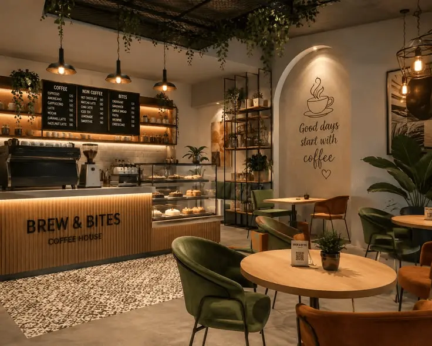

El café que merece tu mañana.
Granos de origen, tostados en casa, preparados por baristas que saben lo que hacen. Un lugar donde detenerse vale la pena.
EncontranosNuestra historia
Cuentan que todo empezó en 2024, cuando encontramos una tostadora italiana abandonada en un galpón y decidimos darle una segunda vida. Lo que iba a ser un experimento de fin de semana se convirtió en Café Origen: un rincón donde el aroma del grano recién tostado se mezcla con el murmullo de las charlas de sobremesa. Desde entonces, cada taza sigue guardando un poco de esa curiosidad inicial.


Encontranos
Dirección
Calle Falsa 123
Barrio Centro
Córdoba, Córdoba
Horarios
Lunes a viernes · 8:00 – 20:00
Sábados · 9:00 – 21:00
Domingos · 9:00 – 14:00
Contacto
hola@cafeorigen.com
+54 380 400 0000
@cafeorigen en Instagram